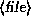

Okay, we're in. ftp> is our prompt, and the ftp program is waiting for commands. There are a few basic commands you need to know about. First, the commands
ls 
and
dir 
both give file listings (where  is an optional argument specifying a particular filename to list). The difference is that ls usually gives a short listing and dir gives a longer listing (that is, with more information on the sizes of the files, dates of modification, and so on).
The command
cd 
will move to the given directory (just like the cd command on UNIX or MS-DOS systems). You can use the command
cdup
to change to the parent directory .
.
The command
help 
will give help on the given ftp  (such as ls or
cd). If no command is specified, ftp will list all of the
available commands.
(such as ls or
cd). If no command is specified, ftp will list all of the
available commands.
If we type dir at this point we'll see an initial directory listing of where we are.
ftp> dir
200 PORT command successful.
150 Opening ASCII mode data connection for /bin/ls.
total 1337
dr-xr-xr-x 2 root wheel 512 Aug 13 13:55 bin
drwxr-xr-x 2 root wheel 512 Aug 13 13:58 dev
drwxr-xr-x 2 root wheel 512 Jan 25 17:35 etc
drwxr-xr-x 19 root wheel 1024 Jan 27 21:39 pub
drwxrwx-wx 4 root ftp-admi 1024 Feb 6 22:10 uploads
drwxr-xr-x 3 root wheel 512 Mar 11 1992 usr
226 Transfer complete.
921 bytes received in 0.24 seconds (3.7 Kbytes/s)
ftp>
Each of these entries is a directory, not an individual file which we can download (specified by the d in the first column of the listing). On most FTP archive sites, the publicly available software is under the directory /pub, so let's go there.
ftp> cd pub
ftp> dir
200 PORT command successful.
150 ASCII data connection for /bin/ls (128.84.181.1,4525) (0 bytes).
total 846
-rw-r--r-- 1 root staff 1433 Jul 12 1988 README
-r--r--r-- 1 3807 staff 15586 May 13 1991 US-DOMAIN.TXT.2
-rw-r--r-- 1 539 staff 52664 Feb 20 1991 altenergy.avail
-r--r--r-- 1 65534 65534 56456 Dec 17 1990 ataxx.tar.Z
-rw-r--r-- 1 root other 2013041 Jul 3 1991 gesyps.tar.Z
-rw-r--r-- 1 432 staff 41831 Jan 30 1989 gnexe.arc
-rw-rw-rw- 1 615 staff 50315 Apr 16 1992 linpack.tar.Z
-r--r--r-- 1 root wheel 12168 Dec 25 1990 localtime.o
-rw-r--r-- 1 root staff 7035 Aug 27 1986 manualslist.tblms
drwxr-xr-x 2 2195 staff 512 Mar 10 00:48 mdw
-rw-r--r-- 1 root staff 5593 Jul 19 1988 t.out.h
226 ASCII Transfer complete.
2443 bytes received in 0.35 seconds (6.8 Kbytes/s)
ftp>
Here we can see a number of (interesting?) files, one of which is called README, which we should download (most FTP sites have a README file in the /pub directory).